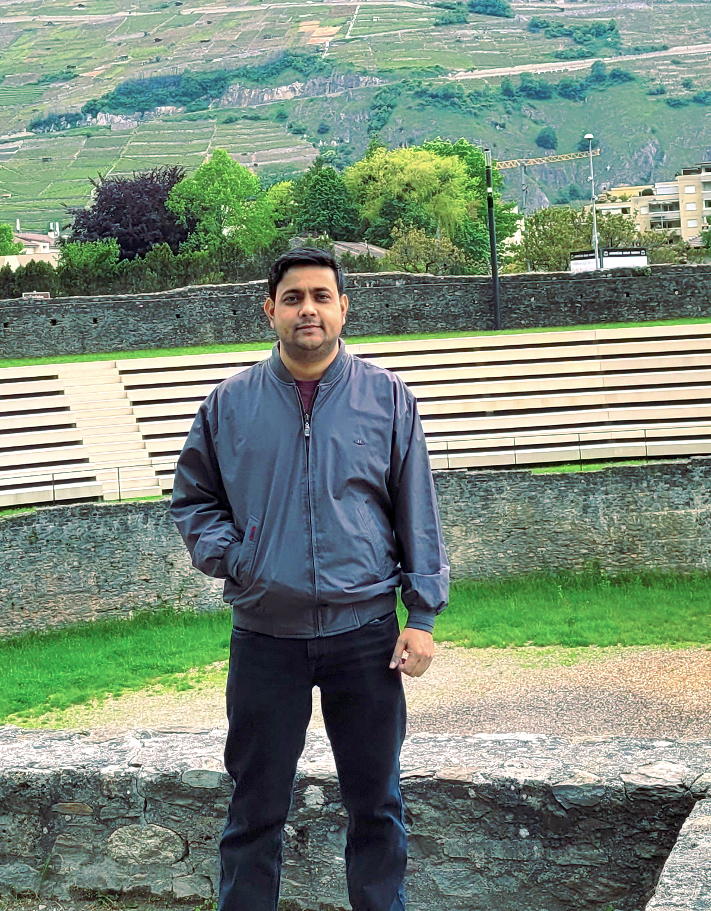

About me
I am currently working as a Postdoc with Dr. Sriram Ganapathy at the LEAP Lab, Indian Institute of Science Bangalore.
Previously, I was working as a Postdoc with Dr. Petr Motlicek at the IDIAP Research Institute in Switzerland from May 2023 to May 2024. My work there was to develop ASR solutions for Air Traffic Control communications. Previously, I was engaged as a Senior Project Engineer at IIT Dharwad in Karnataka, India in a project for building speaker recognition systems for Indian languages. The project was sponsored by the National Language Translation Mission of MeitY, Govt. of India. I have also worked as an Assistant Project Engineer in a DST, Govt. of India sponsored project titled "Online handwriting recognition for Assamese language" at IIT Guwahati. I completed my Ph.D. in Signal Processing & Machine Learning from IIT Guwahati in Assam, India, under the supervision of Prof. S. R. Mahadeva Prasanna and Dr. Prithwijit Guha. Previously, I completed my M.Tech. in Computer Technology from NIT Raipur in Chattissgarh, India. I completed my B.Tech. in Information Technology from Assam University Silchar in Assam, India. My research interests lie in the areas of speech signal processing, machine/deep learning, audio classification/detection, speaker verification, dialect/language identification and vocal mode classification.
Ph.D. Thesis Details
The title of my Ph.D. thesis is "Analysis of Speech and Music Content for Movie Genre Classification". For my Ph.D. work, I tried to perform movie genre classification using only the audio modality of movie trailers. I studied speech and music signals in general and in the context of movies and TV broadcast signals. I developed methods for the efficient discrimination between speech and music. Subsequently, I automatically extracted speech and music information from movie trailer audio using the proposed algorithms. The speech music information obtained from the trailers was used for the genre classification of movies.